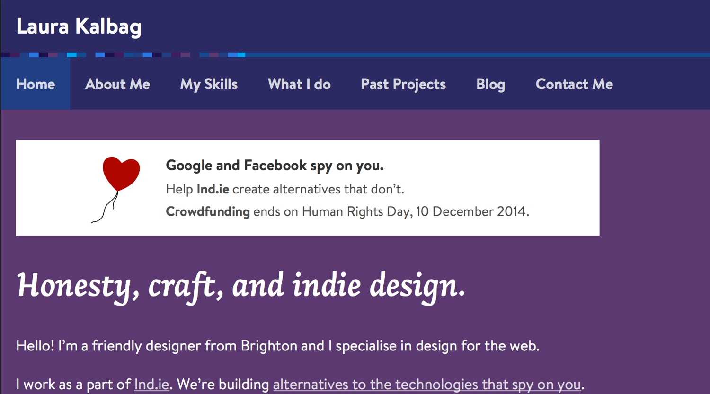

Ind.ie Crowdfunding Banner
7th December, 2014 —
Help us promote our crowdfunding
Update: 11th December 2014
I’ve updated and simplified the banner now the crowdfunding is over.
A few people have asked if we had a banner they could use on their site to help promote our crowdfunding. We really appreciate it! I wanted to make a banner that would be flexible, and fit in well with any site design, whilst still retaining some of the Ind.ie feeling.
You can copy and paste the code for the banner below into anywhere on your website. It’s responsive and should fit flexibly into most spaces.
Or you can download the source.
Making an independent banner
Banners are very different from how they used to be in the past. The days of banner images must be on their way out. Images make pages slower, and just aren’t flexible enough to cope with the different viewport sizes being used to consume the web.
Fitting in with any site
The benefit to using images is the tight control you have over how text and style is displayed. Using HTML and CSS on another site, that inherits the page’s existing CSS, is usually asking for trouble. We frequently see !important used in portable CSS because the designer wants their styles to override the CSS cascade.
However, I want to use the page’s existing styles to our advantage. I want the banner to feel like a part of the site. It’s really easy for us to ignore banners that look ad-like because they’re jarring and so different from the rest of the page. We don’t want people to ignore this banner! It’s not just ordinary advertising, it will only be included on pages by people who really believe in Ind.ie.
Letting the typography through
We use Avenir Next across our Ind.ie site and branding. But to include this branding in the banner would either mean using images, or attempting to include scripts, or hotlink fonts into the code. Both would be very problematic for performance. So I decided to use this constraint to our advantage…
Whilst I’ve added CSS through inline styles and <style>, I’ve not dictated a font-family for any of the text in the banner. Without a font-family declared, the banner will inherit the same font used on the body text of the rest of the page.
I’ve used some bold text as well, and this should also inherit the bold styles on the site, making the text a little more dynamic.
Altogether, this should make it feel like a true part of the host site. You can see how it works on my personal site, and Aral’s site, below.

We may not be using images, but we still want visually-engaging banners. This is why I chose to use SVG. The simplicity of our balloon motif means it’s lightweight, and caniuse.com shows that SVG is very widely supported, particularly if you’re using it at a fixed width. The SVG also ensures that the image looks crisp on high, and increasingly different, resolution displays.
The other bonus in using SVG is that the image is included in the code itself. This means we don’t have to hotlink the image from our own server space. This in turn has three important benefits:
- No unnecessary HTTP call that could block the loading of the rest of the page
- No cost to us for hosting the image (that’s barely pennies anyway)
- No way for us to track the image through our own server logs
Whilst that last point would be a major problem for advertisers, it’s very important for us at Ind.ie. We don’t want you to have to trust us, we want to create tools that mean you don’t need to trust us.